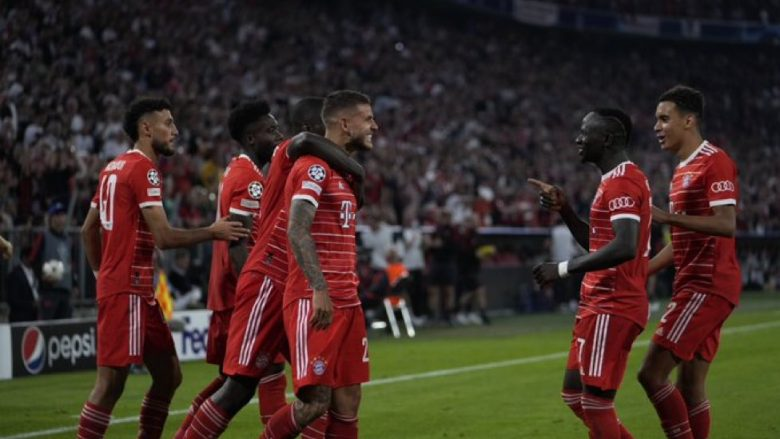

|  |
Rastin e parë e kishte Pedri që futi një top në zonë, por Manuel Neuer bëri një pritje të bukur. Pastaj në minutën e 18-të, Gavi pasoi një top te Robert Lewandowski, i cili gjuan, por pak mbi portë. Në minutën e 21-të sërish Lewandowski në rast të mirë, por kësaj radhe priti Neuer. Rastin më të mirë për bavarezët e kishte Marcel Sabitzer i cili gjuajti, por mbi portë. Në minutën e 42-të sërish Lewa kishte rast të shënonte, por u vonua me gjuajtjen. Barcelona kërkoi penallti në minutën e 43-të me Osumane Dembelen, por gjyqtari heshti.
Më të filluar pjesa e dytë në minutën e 51-të ishte Joshua Kimmich që harkoi nga këndi në zonë për të gjetur Lucas Hernandezin që shënoi nga afër për 1-0. Vetëm tre minuta më pas Bayern Munich shtroi epërsinë me një gol që erdhi pas një aksioni të bukur. Jamal Musiala gjeti me një pasim të bukur Leroy Sanen i cili shënoi në portën e Marc-Andre ter Stegen për 2-0. Barcelona ka mundur të kthehej në lojë në minutën e 54-të, por Pedri nga një pozitë e mirë qëlloi shtyllën. Deri në fund nuk kishte më raste të mirë dhe Bayerni mori tri pikë që e ngritin si të vetme në krye të grupit me 6 pikë. Barcelona dhe Inter kanë nga 3 pikë, ndërsa Plzen është pa pikë. /Telegrafi/
Kjo eshte tabela ne grupin C pas javes se dyte:
| piket | |
|
6 3 3 1 |